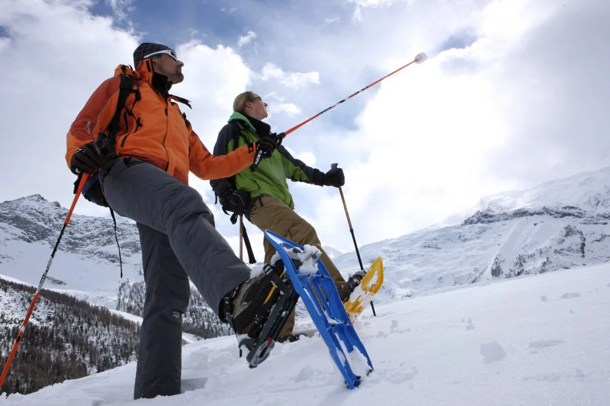
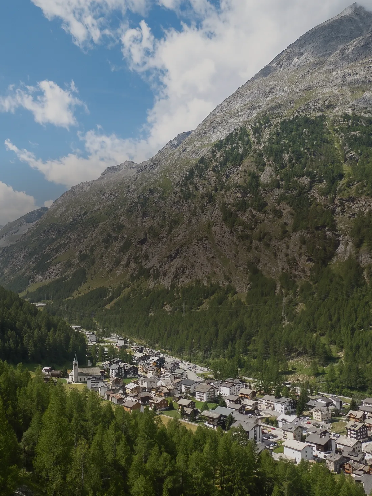
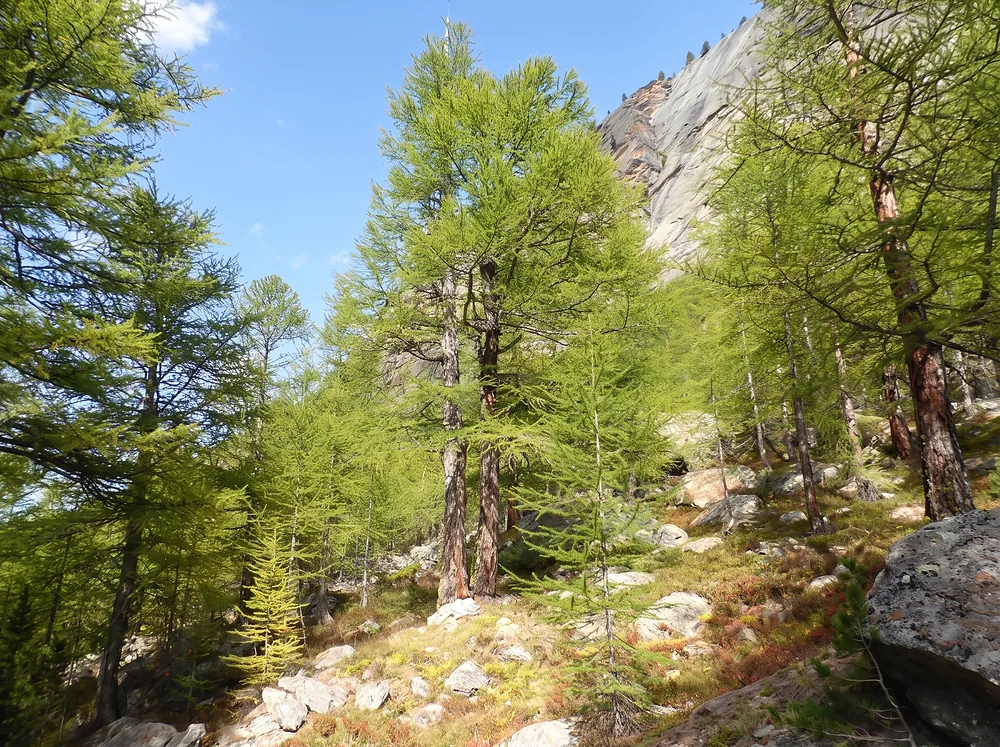
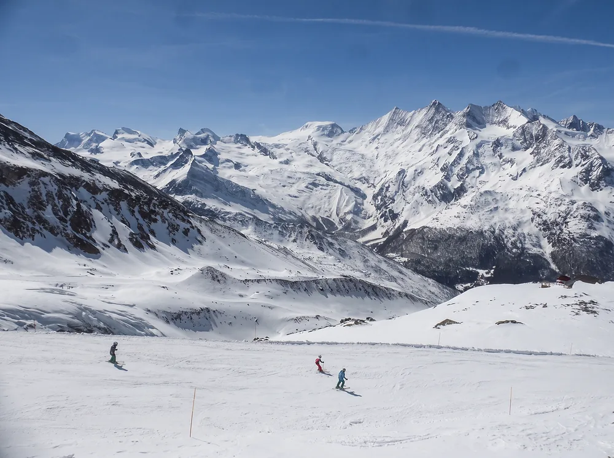
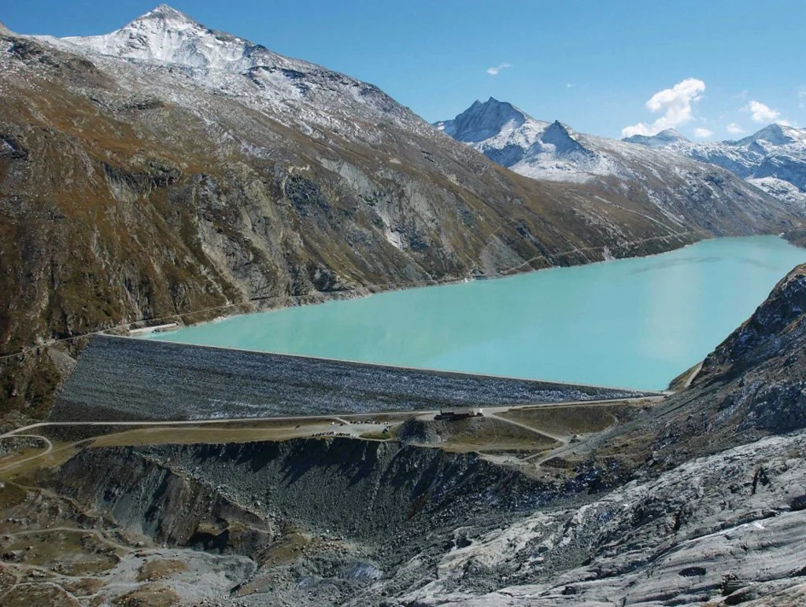
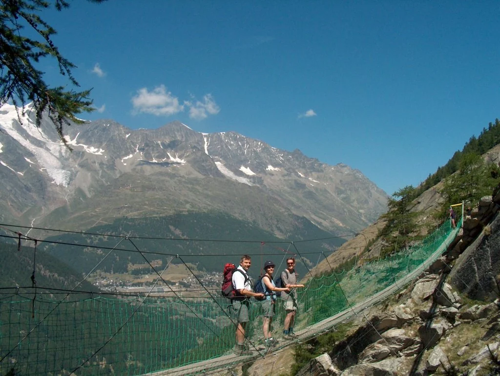
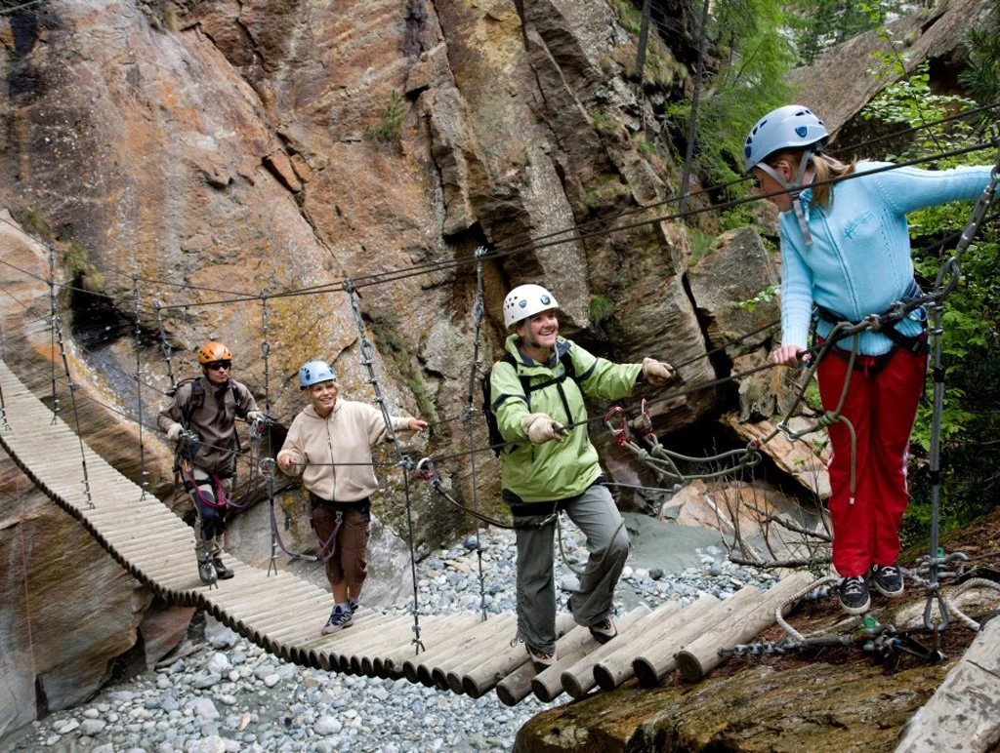
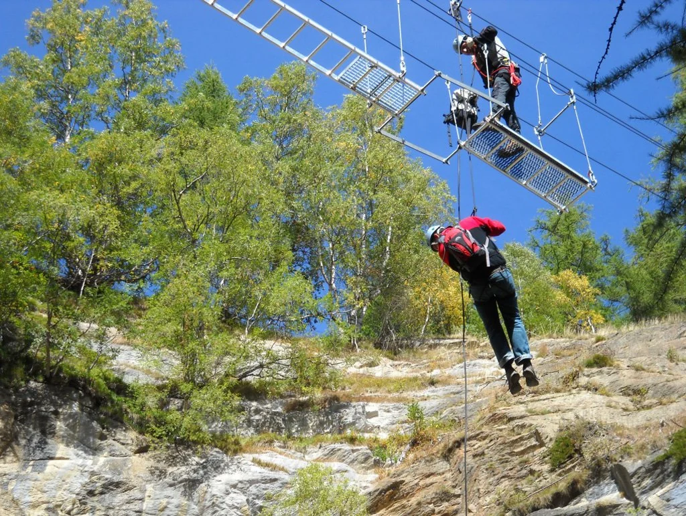
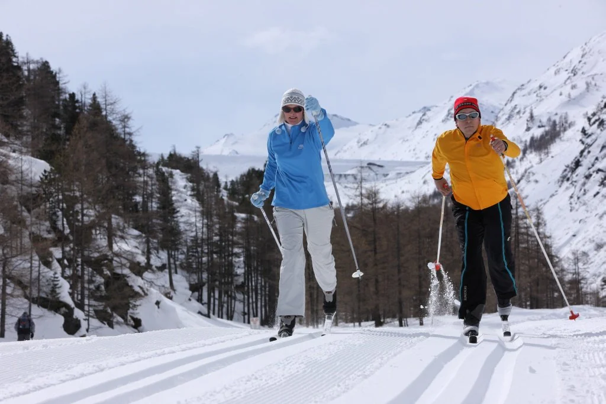

Winterwandern
Gepfadete Wege und geführte Schneeschuhwanderungen, etwa von Saas-Almagell hinauf nach Furggstalden.

1600 m · Wallis · Schweiz
Die südlichste Gemeinde des Saastales, auf 1600 Metern. Ein Walliser Bergdorf, das seinen Charakter behalten hat.
Direkt neben dem Chalet Rustica fliesst ein Bach vorbei, und Sie haben freie Sicht auf das Bergpanorama. Innerhalb von fünf Minuten erreichen Sie zu Fuss die Skilifte, die Sportanlagen, die Bushaltestelle, den Parkplatz und die Einkaufsläden.




Saas-Almagell im Sommer
Die Seitentäler von Saas-Almagell tragen ein weites Netz an Wanderwegen. Der Stausee Mattmark lädt zu einem fast flachen Rundweg ein, die Almagelleralp erreichen Sie über den Höhenweg oder über den Erlebnisweg Almagellerhorn. Im höchstgelegenen Lärchenwald Europas zeigen sich am frühen Morgen Murmeltiere, Gämsen und Steinböcke.


Zur Almagelleralp führt der klassische Höhenweg oder, etwas abenteuerlicher, der Erlebnisweg Almagellerhorn.

Der Klettersteig führt vom Almagellertal ins italienische Antronatal. Bei schönem Wetter sehen Sie bis zum Lago Maggiore.

Ein Klettergarten für Kinder und Anfänger, in nicht allzu steilem Gelände: erste Kletterzüge und Abseilen.
Saas-Almagell im Winter
Die Sesselbahn führt nach Furggstalden auf 1900 Meter und weiter nach Heidbodme auf 2400 Meter, ins schneesichere, familienfreundliche Skigebiet Furggstalden-Heidbodme. Im ganzen Saastal liegen gut 145 Kilometer präparierte Pisten, bis auf 3600 Meter und über den Gletscher.

Gepfadete Wege und geführte Schneeschuhwanderungen, etwa von Saas-Almagell hinauf nach Furggstalden.

Die 26 Kilometer lange Saastal-Loipe führt von Saas-Balen über Saas-Almagell bis zur Eyenalp, an der gefrorenen Vispa entlang.

Ein drei Kilometer langer Schlittelweg führt ins Tal, und auf der Eisbahn wird gelaufen und Eisstock geschossen.
Stolze Viertausender, Gletscher zum Anfassen, stahlblauer Himmel. Die vier Saaser Gemeinden bieten das ganze Jahr über eine Bergwelt, die im Sommer wie im Winter fasziniert.
Das autofreie Gletscherdorf, umgeben von 13 Viertausendern.
Im Herzen des Tals; von Hohsaas auf 3100 Metern sehen Sie 18 Viertausender.
Das südlichste Dorf, Heimat des Chalet Rustica, mit dem Stausee Mattmark.
Ruhig, mit der spätbarocken Rundkirche und dem Fellbach mitten im Dorf.
Mit dem Zug bis Visp, von dort mit dem Bus über Saas-Grund nach Saas-Almagell.
55 Min. ab Bern · 2 Std. ab Basel und Zürich, dann mit dem Bus ins Tal
Mit dem Auto
Mit dem Flugzeug
Hier können Sie mit der Familie Andenmatten-Zurbriggen Kontakt aufnehmen.